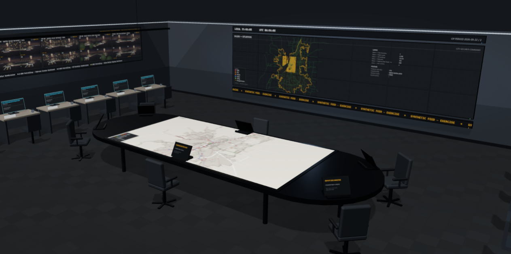
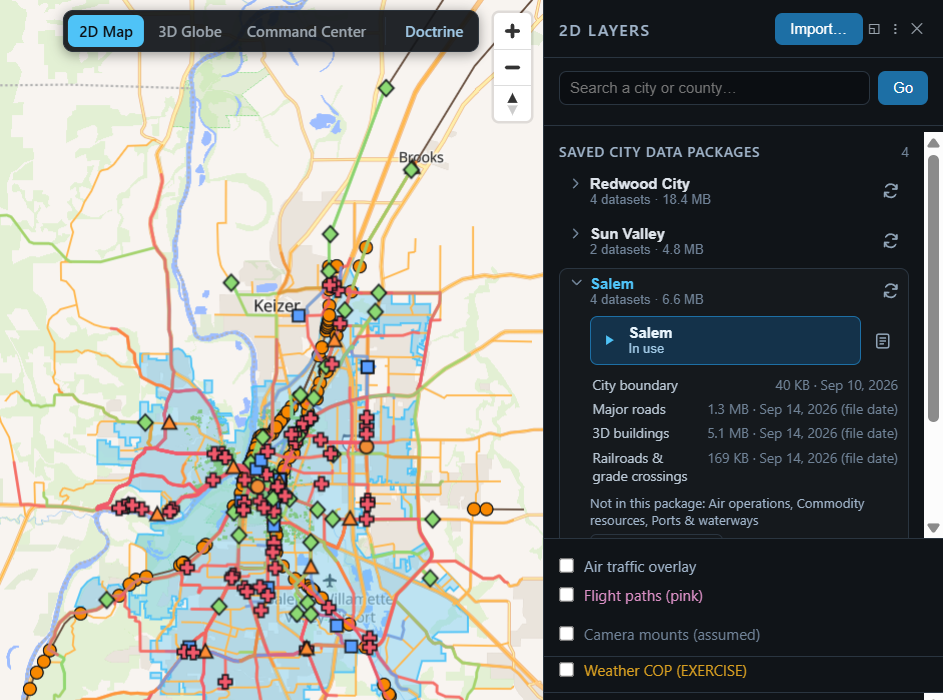
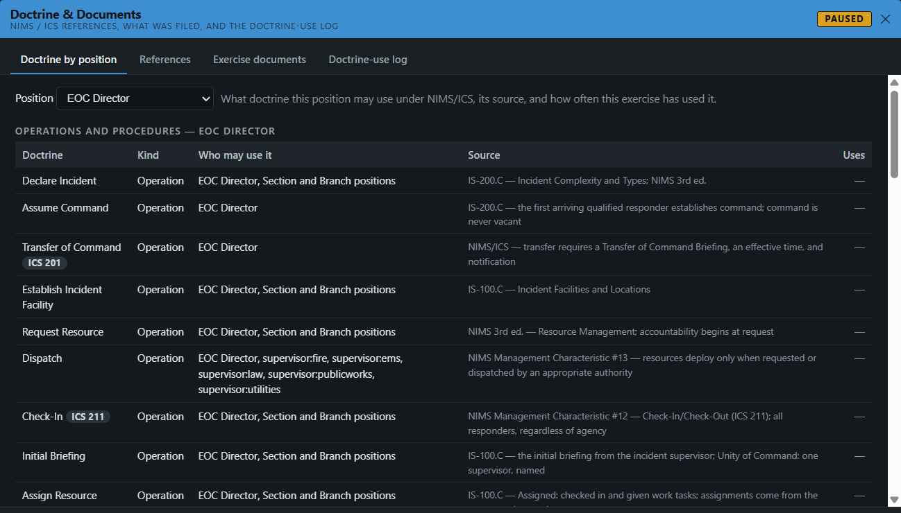
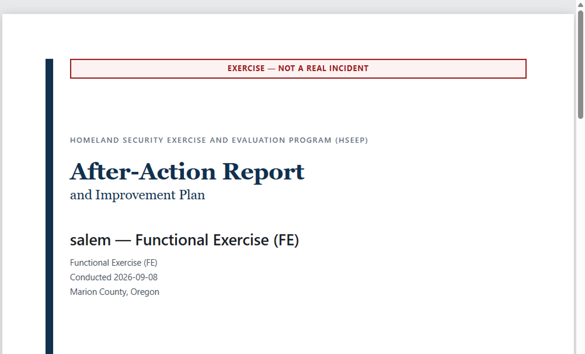

Your city, live. The disaster, now.
City SeCUReD pulls your city as it stands this minute, from live public data, and forks it into an exercise as if the disaster struck now, right where you are. Every decision is recorded and every run is scored the same way, so disaster readiness becomes measurable.

The right resources, to the right places, in the fastest time possible, with everyone kept safe.
That is the whole point of a disaster response. City SeCUReD lets a city practise it against its own live conditions, measure it, and get faster at it, drill after drill.
Not a canned script. The city as it is right now.
Other exercises run a scenario written months ahead. City SeCUReD starts from live conditions: today's roads, today's units at their real facilities, today's weather and traffic. At the moment you fork, the world is copied, the live feeds are cut so nothing flows back, and the disaster begins.
The live city
Roads, facilities and units, plus live public feeds such as weather, flights, rail, shipping, ports and infrastructure.
A person forks it
The world is copied at that instant. Fork is the one lever an AI can propose but never pull: a person authorizes it.
Feeds cut, disaster seeded
Nothing flows back to live systems. The hazard is seeded: an earthquake at six sites, a river flood, a wildfire under east wind, a highway hazmat release.
Response begins
Thirteen positions respond against the city as it stands today. Every record from the fork on is flagged as an exercise.
Salem, Oregon, forked on 17 Aug 2026 at 18:27:56 UTC. The first exercise record came 138 ms later. The run produced 110 responses, 11 ICS filings and 5 refusals, and both record chains verified intact when the report was produced.
Cities must exercise for disasters. Nobody can measure whether it works.
The after-action report is a narrative, and two evaluators watching the same drill write different reports. The same gap now covers software: vendors sell AI decision support to emergency managers, and there is no accepted way to test whether it helps.
Not measured
The report is written from notes and memory.
Not comparable
No two jurisdictions score the same way, so progress can't be tracked year to year.
Too costly to run often
Consultants and staff time mean most jurisdictions drill as seldom as the rules allow.
Can't be re-checked
Once the drill ends, the report is the only evidence.
Fewer people pulled off duty. A record instead of notes.
| Today | With City SeCUReD | |
|---|---|---|
| The scenario | A script written months ahead | Your city as it stands right now, forked live |
| Absent agencies | Staff pulled off duty to play them | The simulator plays them |
| The record | Notes, taken by hand | Every decision, who made it, and when |
| The report | Written from memory | Generated from the record, in the federal exercise format |
| Comparison | Not possible across years or cities | Same scenario, same seed, same scoring |
A measurement anyone can trust, and anyone can check.
Hash chains, fixed seeds, paired experiments and simulation for emergency training are all established. What is new is an instrument that exercises a city live, as it stands today, while staying neutral by construction and re-derivable by anyone.
The disaster happens here, now
Each exercise forks the city's current state from live public data, so responders face today's roads, units and weather instead of a stale script.
No private data needed
Live conditions come only from open public data, and hazards from published models with fixed random seeds. No jurisdiction hands over its inventory, staffing or vulnerabilities, so one instrument works across every jurisdiction.
A disputed score is settled by re-running it
The forked snapshot and its seed go into a hash-chained, append-only record, so a run replays exactly long after live conditions have changed.
It extends doctrine that already has authority: NIMS, ICS, NFPA response-time standards and FEMA exercise doctrine.
Learn from how cities drill. Cut the time it takes to get people moving.
Every exercise is recorded the same way, so over time the record shows how a city's own people really respond. Position agents learn from that record, drill after drill. In a real crisis they are used for one thing only: shortening the delay before the right people are moving, so the right resources reach the right places sooner and everyone stays safe.
Watch the drills
Each run adds to a record of who was called, what was asked for and how long each step took to start.
Learn the city's own patterns
Position agents learn each position's first moves from how that city's staff actually drill, not from a generic script.
Close the gap, not the decision
In a crisis the agent has the notifications, requests and forms drafted the moment they're needed. A named person still approves every order.
- The aim: less time between the first report and people moving. The agent never commands, never routes and never decides.
Five steps, every one recorded.
Today's city, forked live
Its real road network, its units at their real facilities and its live conditions, from open data.
A seeded disaster
Drawn from 19 hazard types, from routine incidents to a major earthquake, flood, wildfire, hazardous-materials release or cyber event.
13 positions respond
NIMS and ICS positions, each filled by a person, an AI model or a fixed doctrine policy.
Every decision recorded
In an append-only, hash-chained record, flagged as an exercise.
Scored, report written
The after-action report is generated from the record, not from memory.
Working software, not a concept.
A 2D map, a 3D terrain view and a modelled operations room, all kept in step. A scenario author, a doctrine panel, a scoring pass and a generated after-action report. It runs on one laptop with no network connection.



Figures as of 18 Aug 2026.
Three exams, each able to fail.
The work ahead is stated so it can fail. The harness for paired runs already exists: it runs comparison arms (no responder, a doctrine policy, a fixed reflex and an AI model) on identical seeds and reports effect sizes.
Discrimination
A doctrine-correct response must score measurably higher than a deliberately degraded one on identical scenarios.
Fails if the gap is inside the error band.
Expert agreement
Credentialed emergency managers rank pairs of runs blind; the score must agree with them.
Fails if it does no better than chance.
Reproduction
An independent party re-runs a completed result from its seed and record alone.
Fails if they get a different score.
The plan, in months
| Work | When | Phase |
|---|---|---|
| Discrimination exam | Months 0 to 6 | Phase I |
| Practitioner review of scenarios | Months 0 to 6, alongside | Phase I |
| Independent reproduction | Months 3 to 9 | Phase I |
| Prediction exam against historical incidents | Months 12 to 24 | Phase II |
| Published, reproducible methodology | About month 24 | Phase II |
That calibration is the work ahead.
- Not validated against a real incident.
- Learning from a city's drills is the direction, not yet built; no response time has been measured.
- Scoring not yet calibrated to historical outcomes.
- No credentialed reviewer has signed off on scenarios yet.
- A result today says one strategy beat another inside this simulator, nothing more.
- Emergency managers: more practice for less, and a report built from a record instead of memory.
- Officials who fund them: a before-and-after they can defend in a budget hearing.
- Buyers of response AI: a way to test what they are being sold.
- No hardware or sensors. A software subscription per jurisdiction.
- Touches nothing operational. Read-only, with no write path to any real device.
- The city owns its records and authors its own published report from them.
"We are prepared" should be a claim someone can check.
We're looking for emergency managers to review scenarios and for jurisdictions to run a pilot exercise.
Other products
Build-A-Bot
Build your own governed agent
n-HR™
HR for your AI agents
Position Agents
An assistant for each EOC position
Desk Agents
Email and paperwork for small business
The Engine
The governed runtime under every agent
Verifiable Inference
Replay any AI answer, byte for byte
G-ynthetic Mind
A companion that remembers
CubeX
Chess, rebuilt for a cube